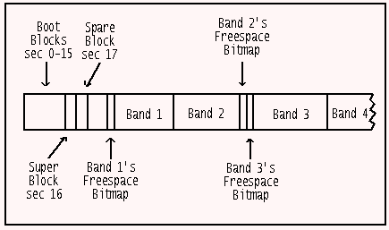
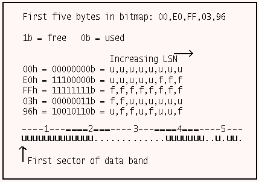
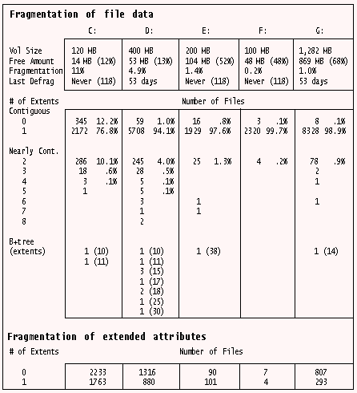
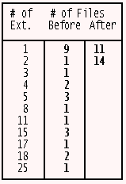
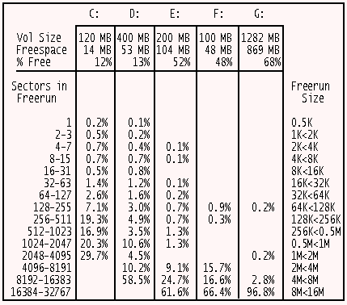
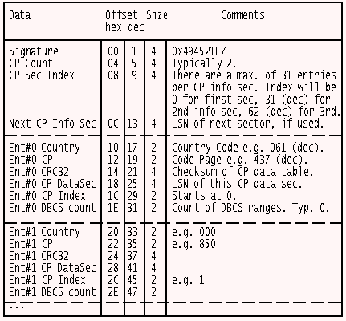

This article originally appeared in the May 1996 issue of Significant Bits, the monthly magazine of the Brisbug PC User Group Inc.
This month we look at how HPFS knows which sectors are occupied and which ones are free. We examine the amount of file fragmentation on five HPFS volumes and also check out the fragmentation of free space. A program will be presented to show free runs and some other details. Finally, we'll briefly discuss Code Pages and look at a program to display their contents.
The sector usage on a HPFS partition is mapped in data band bitmap blocks. These blocks are 2 KB in size (four sectors) and are usually situated at either the beginning or end of a data band. A data band is almost 8 MB. (Actually 8,190 KB since 2 KB is needed for its bitmap.) See Figure 1. The state of each bit in the block indicates whether or not a sector (HPFS' allocation unit) is occupied. If a bit is set (1) then its corresponding sector is free. If the bit is not set (0) than the sector is occupied. Structures situated within the confines of a data band such as Code Page Info & Data sectors, Hotfix sectors, the Root Directory DirBlk etc. are all marked as fully occupied within that band's usage bitmap.

Figure 1: The basic data layout of a HPFS volume.
Since each bit maps a sector, a byte maps eight sectors and the complete 2 KB block maps the 16,384 sectors (including the bitmap block itself) in a 8 MB band. And since two blocks can face each other, we arrive at the maximum possible extent (fragment) size of 16,380 KB. Examine Figure 2 now to see examples of file and freespace mapping.

Figure 2: The correspondence of the first five bytes in a data band's usage bitmap to the first 40 sectors in the band.
In this example we see 23 occupied sectors ("u") and 4 unoccupied areas (".") which we will refer to as "freeruns" [of sectors]. At one extreme, the 23 sectors might belong to one file (here in four extents) while at the other extreme we might have the FNODEs of 23 "zero-length" files. (Every file and directory entry on a HPFS volume must have an FNODE sector.)
The advantages of the bitmap approach are twofold. First, the small allocation unit size on a HPFS volume means greatly reduced allocation unit wastage compared to large FAT partitions. Second, the compact mapping structure makes it feasible for HPFS to quickly search a data band for enough free space to slot in a file of known size, in one piece if possible. For example, as just mentioned HPFS can map 32,760 allocation units with just 4 KB of bitmaps whereas a 16-bit FAT structure requires 64 KB (per FAT copy) to map 32,768 allocation units.
In this section we'll examine the level of fragmentation on the five HPFS partitions of my first HD. Look at Figure 3. Notes:
1. A time-since-last-defrag figure of "Never" means that I've never run a defragger across this partition since upgrading to OS/2 Warp 118 days ago. This value is stored in the SuperBlock (LSN 16) and was determined by using the ShowSuperSpare REXX program featured in Part 2.
2. The fragmentation levels were reported by the wondrous FST (freeware) with "FST -n check -f C:" while the names of the fragmented files and their sizes came from the GammaTech Utilities (commercial) "HPFSOPT C: -u -d -o1 -l logfile". You can also use the Graham Utilities (commercial) "HPFS-EXT C: -s".
3. The high number of files with 0 data extents on C: is due to the presence of the WPS folders on this drive. Each of these has "zero" bytes in the main file but they usually have bytes in EAs.
4. Files with 0 or 1 extents are considered to fully contiguous, so I've placed them in one grouping.
5. Files with 2-8 extents are considered to be "nearly" contiguous" since the fragments will usually be placed close together on the disk and also because a list of the location and length of up to 8 extents can be kept in a file's FNODE sector. This list will be kept memory resident while the file is open. Note 1: the extents themselves can not be kept memory resident since, theoretically, they could be up to 8*16,380 KB in size. But no non-data disk reads, after the initial read of the FNODE, would be required to work with the file. Note 2: under some circumstances, the 8 extents, if small enough, could be kept memory resident in the sense that they could be held in HPFS' cache. We will consider FNODEs in detail in a later installment.
6. Files with more than 8 extents have too many fragments to be listed in their FNODEs. Instead an B+tree allocation sector structure (an ALSEC) is used to map the extents. The sector mappings are small enough to keep memory resident while the file is open. ALSECs will be covered in a latter installment.
7. EAs are usually not fragmented since, in the current implementation of OS/2, the total EA size associated with any one file is only 64 KB. If a file has EAs in 0 extents then the EA information is stored completely within the FNODE sector. (There is space in the FNODE for up to 145 bytes of "internal" EAs.) In all other cases on my system they currently stored in single, external runs of sectors. EAs will be covered in later installments.

Figure 3: Fragmentation analysis of five HPFS partitions.
We now turn to the topic of what circumstances are leading to file fragmentation on these partitions.
C: _ The OS/2 system partition. I've run out of space on this drive on occasions. Activity here occurs though the running of Fixpacks (FP 16 and then FP 17 were run), INI maintenance utilities and driver upgrades. There is really nothing of concern here. Most HPFS defraggers suggest not trying to defrag files that have less than 2 or 3 extents since you run the risk of fragmenting the free space. We will return to this topic shortly.
D: _ My main work area and the location of communications files. I use the DOS comms package TELEMATE because I've always liked its features (although OS/2 has to work hard to handle its modem access during a file transfer - OS/2 comms programs, in general, are much less demanding of the CPU's attention). The other major comms package I use is OS/2 BinkleyTerm v2.60 feeding OS/2 Squish message databases. The fragmented files consist mainly of files downloaded by TELEMATE (DOS comms programs do not inform HPFS, ahead of time, of how much space the downloaded file will occupy) and Squish databases (*.SQD). The drive was defragged 53 days ago at which time no special effort was made to reduce file fragmentation below 2-3 extents, accounting for the presence of 245 files with two extents. This really is an insignificant amount regardless of what the 4% figure may lead you to believe.
The most fragmented file on this partition is a 150 KB BinkleyTerm logfile with 30 extents. The main reason I can see for fragmentation in this case is that the file is frequently being updated with information while file transfers are in progress. The Squish databases are also prone to fragmentation. Out of a total of 25 database files there were 8, averaging 500 KB each, with a average of 15 extents.
E: _ The fragmentation here was insignificant apart from a single 2.8 MB executable Windows program that has had a DOS patch program run over it, resulting in 38 fragments. The 2-extent files were mainly data files that are produced by this same Windows package (being run under WIN-OS2).
F: _ Almost no fragmentation since this partition is reserved for DOS programs and I don't use them much.
G: _ My second major work partition. Fragmentation is low and unlikely to go much lower since 2 extents is considered below the point of defragger involvement.
The conclusions to be drawn from the above is that, if you don't get too hot under the collar about some files having 2 or 3 extents then there will generally be little need to worry about fragmentation under HPFS. Only certain types of files (some comms/DOS/Windows) will be candidates. And keeping partitions less than 80% full should help reduce general fragmentation as well.
Since fragmentation is a relatively minor concern under HPFS there is not much of an argument for purchasing OS/2 utilities based mainly on their ability to defragment HPFS drives, especially since it's not hard to defragment files yourself. You see, providing there is enough contiguous freespace on a volume, the mere act of copying the files to a temporary directory, deleting the original and then moving the files back will usually eliminate, or at least reduce fragmentation since HPFS, knowing the original filesize, will look for a suitably sized freespace. The success of this technique is demonstrated in Figure 4 where 25 Squish database files (*.SQD) totalling 5.7 MB where shuffled about on D:. Note: don't use the MOVE command to initially transfer the files to the temp directory since this will just alter the directory entry rather than actually rewriting the files.

Figure 4: Number of extents in 25 SQD files before and after the defrag process described in the text.
I've used the GU's HPFS-EXT to report these figures. This is freely available in the GULITE demo package. Note: the fully functional HPFSDFRG is also in this package but I wanted to show that it's not that hard to do this by hand. HPFSDFRG does much the same as I did except that you can specify the optimisation threshold (minimum number of extents before a file becomes a candidate) and it will retry the copying operation up to ten times if there are more extents after the operation than before it (due to heavily fragmented freespace).
Another significant aspect of HPFS' fragmentation resistance is how well the FS keeps disk freespace in big, contiguous chunks. If the current files on a partition are relatively fragmentation free but the remaining freespace is arranged in lots of small chunks then there is a good change that new files will be fragmented. You can check this with "FST -n info -f C:". This produces a table that counts the number of freespace extents that are 1, 2-3, 4-7, 8-15, ... 16384-32767 sectors long. In my opinion though it is more important to consider the product of the actual extent size by their frequency since the presence of numerous 1-extent spaces are not important if there are still a number of large spaces available.
Figure 5 shows the output of the REXX program ShowFreeruns.cmd. The partition of 100 MB is almost empty. The display shows the location of the 2 KB block that holds the list of the starting LSNs of each bitmap block (this figure comes from the dword at offset 18h in the SuperBlock), the location of each bitmap block on the left and the sector size and location of freespace on the right. As you see, this partition has 13 data bands, 6 of which face each other. A version of ShowFreeruns.cmd that only outputs the run size was used to generate a list of figures. This list was loaded into a spreadsheet, sorted and a frequency distribution performed. See Figure 6. You can see that C: has no large areas remaining, D: has the majority of its freespace in the 4 MB < 8 MB range and that E:, F: and G: have kept large majorities of their freespace in very big runs. Overall, this is quite good performance.
Inspecting drive O:
List of Bmp Sectors: 0x00018FF0 (102384)
Space-Usage Bitmap Blocks:
Freespace Runs:
0x00000014-00000017 (20-23)
0x00007FFC-00007FFF (32764-32767)
130-32763 (#1:32634)
0x00008000-00008003 (32768-32771)
0x0000FFFC-0000FFFF (65532-65535)
32772-65531 (#2:32760)
0x00010000-00010003 (65536-65539)
0x00017FFC-00017FFF (98300-98303)
65540-81919 (#3:16380)
81926-98291 (#4:16366)
0x00018000-00018003 (98304-98307)
0x0001FFFC-0001FFFF (131068-131071)
100369-102383 (#5:2015)
102400-131067 (#6:28668)
0x00020000-00020003 (131072-131075)
0x00027FFC-00027FFF (163836-163839)
131076-163835 (#7:32760)
0x00028000-00028003 (163840-163843)
0x0002FFFC-0002FFFF (196604-196607)
163844-196603 (#8:32760)
0x00030000-00030003 (196608-196611)
196612-204767 (#9:8156)
Figure 5: Output from the ShowFreeruns.cmd REXX program.

Figure 6: Freespace analysis on five HPFS partitions.
Like other programs in this series, ShowFreeruns.cmd (see Figure 7) uses SECTOR.DLL to read a sector off a logical drive. I was motivated to design this program after seeing the output of the GU's "HPFSINFO C: -F". On a one-third full 1.2 GB partition, the program presented here takes 17 secs compared to HPFSINFO's time of 26 secs. HPFSINFO also shows the CHS (Cyl/Hd/Sec) coordinates of each run. I was not interested in these but instead display the freerun's size. HPFSINFO also displays the meaning of what's in the SuperBlock and the SpareBlock. If you want to do this, you can include the code from ShowSuperSpare.cmd from Part 2 and it will only add an extra 0.5 secs to the time. The performance then, for a interpreted program (REXX), is quite good and was achieved primarily through a speed-up technique to be discussed shortly. Moreover, HPFSINFO consistently overstates the end of each freerun by 1 and it sometimes does not show the last run (e.g. on C: it states that there are 366 freeruns but only shows 365 of them). This last bug appears to be caused by the last freerun continuing to the end of the partition. My design accounts for this situation.
/* Shows bitmap locations and free space runs */
ARG drive . /* First parm should always be drive */
IF drive = '' THEN CALL HELP
parmList = "? /? /H HELP A: B:"
IF WordPos(drive, parmList) \= 0 THEN CALL Help
/* Register external DLL functions */
CALL RxFuncAdd 'ReadSect','Sector','ReadSect'
CALL RxFuncAdd 'RxDate','RexxDate','RxDate'
/* Initialise Lookup Table*/
DO exponent = 0 TO 7
bitValue.exponent = D2C(2**exponent)
END exponent
secString = ReadSect(drive, 16) /*Read Superblk sec*/
freespaceBmpList = C2D(Reverse(Substr(secString,25,4)))
totalsecs = C2D(Reverse(Substr(secString,17,4)))
'@cls'
SAY
SAY "Inspecting drive" drive
SAY
/* LSN 25 = list of bitmap blocks */
CALL ShowDword " List of Bitmap secs",25
startOfListBlk = 0
startOfBlk = 0
bmpListBlk = ""
bmpBlk = ""
getFacingBands = 0
runNumber = 0
byteOffset = 0
runNumber = 0
/* Read in 4 secs of the list of sec-usage bmp blks */
DO secWithinBlk = freespaceBmpList TO freespaceBmpList+3
temp = StartOfListBlk + secWithinBlk
bmpListBlk = bmpListBlk||ReadSect(drive, temp)
END secWithinBlk
SAY
SAY "Space-Usage Bitmap Blocks:"
SAY " Freespace Runs:"
/* Use dword pointers to bmps to read in 2KB bmp blks */
DO listOffset = 1 TO 2048 BY 4
startDecStr = C2D(Reverse(Substr(bmpListBlk,ListOffset,4)))
IF startDecStr = 0 THEN /* No more bmps listed */
DO
IF getFacingBands = 1 THEN
DO /* Last data band had no facing data band */
bmpSize = 2048
CALL DetermineFreeruns
LEAVE
END
LEAVE
END
/*Display a blank line when a new facing band occurs*/
IF (ListOffset+7//8 = 0 THEN SAY
CALL ShowBmpBlk listOffset
DO secWithinBlk = 0 TO 3
temp = StartOfBlk + secWithinBlk
bmpBlk = bmpBlk||ReadSect(drive, temp)
END secWithinBlk
getFacingBands = getFacingBands + 1
IF getFacingBands = 2 THEN /* Wait until you get both */
DO /* bmps for the facing data*/
bmpSize = 4096 /* bands since maximum extent*/
CALL DetermineFreeruns /* length is 16,380 KB */
byteOffset = byteOffset+4096
getFacingBands = 0
bmpBlk = ""
END
END listOffset
EXIT /**************EXECUTION ENDS HERE**************/
FourBytes2Hex: /* Given offset, return dword */
ARG startPos
rearranged = Reverse(Substr(secString,startPos,4))
RETURN C2X(rearranged)
ShowDword: /* Display dword and dec equivalent */
PARSE ARG label, offset
hexStr = FourBytes2Hex(offset)
SAY label": 0x"hexStr "("X2D(hexStr)")"
RETURN
ShowBmpBlk:
/* Show start-end of freespace runs in hex & dec */
PARSE ARG offset
endDecStr = C2D(Reverse(Substr(bmpListBlk,offset,4)))+3
SAY " 0x"D2X(startDecStr,8)"-"D2X(endDecStr,8)
" ("startDecStr"-"endDecStr")"
startOfBlk = startDecStr
RETURN
DetermineFreeruns:
runStatus = 0
oldchar = ''
/* Check 128 secs at a time to speed up operation */
DO para = 1 to bmpSize BY 16
/* 16 bytes*8 secs/byte = 128 secs per para scanned */
char = Substr(bmpBlk,para,16)
IF char = 'FFFFFFFFFFFFFFFFFFFFFFFFFFFFFFFF'x &,
runstatus = 1 THEN ITERATE para
IF char = '00000000000000000000000000000000'x &,
runstatus = 0 THEN ITERATE para
/* Part of paragraph has run start/end
so check a byte (8 secs) at a time. */
DO byte = para TO para + 15
char = Substr(bmpBlk,byte,1)
IF char > '0'x THEN /* 1 or more free secs */
DO
IF char = 'FF'x THEN /* 8 unoccupied secs */
IF runStatus = 1 THEN /* Run is in progress */
NOP
ELSE /* Run starts on 8 sec boundary */
DO
startByte = byte + byteOffset
startBitPos = 0
runStatus = 1 /* Start run determination */
END
ELSE
CALL DetermineBit /* Partial usage of 8 secs */
END
ELSE
DO /* All 8 secs are used */
IF runStatus = 1 THEN
DO
endByte = byte + byteOffset
endBitPos = -1 /* Run ends with prior sec */
CALL ShowRun
END
END
END byte
END para
IF runStatus = 1 THEN /* Freespace at end of part. */
DO
endByte = 9999999999 /* Larger than # of secs in */
endBitPos = 0 /* max. possible part.(512GB) */
CALL ShowRun /* so ShowRun will set runEnd */
/* to last LSN in this part. */
END
RETURN
DetermineBit: /* Free/occupied usage within 8 sec blk */
DO bitPos = 0 TO 7
IF runStatus = 0 THEN
DO /* No run currently in progress */
IF BitAnd(char, bitValue.bitPos) > '0'x THEN
DO /* sec is free */
startByte = byte + byteOffset
startBitPos = bitPos
runStatus = 1
END
END
ELSE
DO
IF BitAnd(char, bitValue.bitPos) = '0'x THEN
DO /* sec is used */
endByte = byte + byteOffset
/* When a run ends, the sec before the first
used one is the last sec in the freerun. */
endBitPos = bitPos - 1
CALL ShowRun
END
END
END bitPos
RETURN
ShowRun:
/* Display freerun start-end secs & reset run status */
runNumber = runNumber + 1
runStart = (startByte - 1) * 8 + startBitPos
runEnd = (endByte - 1) * 8 + endBitPos
IF runEnd > totalSecs THEN runEnd = TotalSecs - 1
IF runStart \= runEnd THEN /* More than 1 sec is free */
DO
run = runStart"-"runEnd
run = Left(run||Copies(" ",14),15)
SAY Copies(" ",40) run "(#"runNumber":"runEnd-RunStart+1")"
END
ELSE
DO
run = Left(runStart||Copies(" ",14),15)
SAY Copies(" ",40) run "(#"runNumber":1)"
END
runStatus = 0
RETURN
Help:
SAY
SAY "Purpose:"
SAY " ShowFreeruns displays the location of the
sec-usage bitmap blocks" /* Wrapped long line */
SAY " and the location and extent of free space runs."
SAY
SAY "Example:"
SAY " ShowFreeruns C:"
SAY
EXIT
Figure 7: The ShowFreeruns.cmd REXX program. Requires SECTOR.DLL. Note that
the long SAY line (line 40) should include the next line as well. (SAY clauses
can't be continued on to the next line with a comma.)
Since a sector is mapped by a bit, the program often needs to check the status of a bit within a bitmap's byte. This is done using the BITAND(string1, string2) inbuilt function. In this design string 1 holds the byte to be examined and string 2 holds a character that only has the corresponding bit set. Rather than having to work out the character for string 2 each time BITAND() is used, we instead precalculate the eight characters and then store them in the BitValue. compound variable for later use.
The next step is to read in the SuperBlock and from it get the location of the list of bitmap sectors and the total number of sectors. The later value is required so we know when we've reached the end of the partition.
We then read in the four sectors of the block holding the list of bitmaps. The list consists of dwords that store the starting LSN of each bitmap block. 128 dwords can fit in each sector of the list so the four sectors of the list can hold 512 bitmap block LSNs. Now a bitmap block maps 8 MB of diskspace so this 'lite' version is only good when dealing with a partition of less than 4 GB. (Earlier works refer to the maximum partition size as 512 GB but in the recent "Just Add OS/2 Warp" package, in its technical section, it is stated that the maximum partition size is 64 GB.) I won't be able to check this aspect of the design until I get a HD bigger than 4 GB and succumb to the mad urge to partition it as one volume.
The end of the list is indicated by the first occurrence of 0000h. The list of the 100 MB partition shown in Figure 5 contains only 13 dwords since it has 13 data bands so, in a typical case, you should not expect to find much data stored in this block.
A freerun can be bigger than a data band since pairs of bands face each other, so we consider two bands at a time, unless we reach the end of the partition without a facing band. Once we have a data region we call the DetermineFreeruns procedure. Here we examine the two, combined data bitmaps (unless it's a solo band at the end). In the initial design I looked at each byte in the 4 KB bitmap combination to see it if it was either 00h (all eight sectors used) or FFh (all eight sectors free). Typically, you will find lots of occupied or free sectors together, so checking eight at a time speeds up the search. Only when the byte was neither of these is a bit-level search required.
However, the speed of this version was poor, with the search though each byte of the 322 KB of bitmaps for the 161 databands in the 1.2 GB partition taking a total of 104 secs. The obvious solution was to extend the optimisation method to a second, higher level by checking more bytes first to see if they were all set or clear. I settled on 16 bytes which covers 128 sectors (64 KB) of diskspace at a time and this resulted in the final time of 17 secs. Further experiments with larger (64 byte) groups and also with third-level optimisation did not show much improvement with my mix of partitions but your situation may warrant further experimentation.
Different languages have different character sets. Code Pages (CPs) are used to map an ASCII character to the actual character. CP tables reside in COUNTRY.SYS. They are also present on a HPFS volume and every directory entry (DIRENT) includes a CP index value.
CPs are used to map character case (i.e. in a foreign character set the relationship between lower and upper-case characters) and for collating sequences used when sorting. As mentioned in Part 1, HPFS directories use a B-tree structure which, as part of its operation, always store file/directory names in sorted order. Remember that HPFS is not case-sensitive (including when sorting) but it preserves case.
The European-style language (including English) have relatively straightforward Single-Byte Character Sets (SBCS) i.e. one character is represented by one byte. Asian character sets typically have many characters so they require two bytes per character (DBCS).
The first 128 characters in all ASCII CPs are the same so the CP tables on the disk only map ASCII 128-255.
The SpareBlock holds the LSN of the first CP Info sector. There is a header followed by up to 31 16-byte CP Info Entries. There is provision for more than one CP Info sector which could hold CP Info Entries 31-61 (counting from 0). Why so many different CPs are catered for I have no idea since I've been unable to have more than two loaded at a time. In Australia we typically use CP437 (standard PC) - Country 061 and CP850 (multilingual Latin-1) - Country 000. The layout of a CP Info sector is shown in Figure 8.

Figure 8: The layout of a Code Page Infomation Sector.
The CP Info Entry contains the LSN where this entry's CP mapping table is stored. This sector is a CP Data Sector. As well as a header there is enough space for up to three 128-byte CP maps per sector. Figure 9 shows the layout of a CP Data Sector.
Figure 9: The layout of a Code Page Data Sector.
Figure 10 shows the display produced by the REXX CP.cmd program (Figure 11). I've stopped it before it reached ASCII 255. Normally, the output will scroll off the screen, so either pause it or send it to the printer. If the mapped character has the same value as its ASCII value the word "same" is displayed instead to reduce clutter.

Figure 10: Partial output from the CP.cmd program. List continues on to ASCII 255.
/* Decodes CP info & CP data sectors on a HPFS volume */
ARG drive . /* First parm should always be drive */
IF drive = '' | drive = "?" | drive = "HELP",
| drive = "A:" | drive = "B:" THEN CALL Help
CALL RxFuncAdd 'ReadSect','Sector','ReadSect' /* In SECTOR.DLL */
secString = ReadSect(drive,17) /* SpareBlock is LSN 17 */
'@cls'
SAY
SAY "Inspecting drive" drive
SAY
/* Offset 33 in Spareblock contains dword of CP info LSN */
cpInfoSec = C2D(Reverse(Substr(secString,33,2)))
secString = ReadSect(drive,cpInfoSec) /* Load CP info sec */
numOfCodePages = C2D(Reverse(Substr(secString,5,2)))
prevDataSec = ''
SAY "CODE PAGE INFORMATION (sector" cpInfoSec"):"
SAY "Signature Dword: 0x"FourChars2Hex(1)
SAY " CP# Ctry Code Code Page CP Data Sec Offset"
DO x = 0 TO numOfCodePages-1
hexCountry = TwoChars2Hex((16*x)+17)
decCountry = Right('00'X2D(hexCountry),3)
cp = TwoChars2Hex((16*x)+19)
country.x = X2D(cp)
hexSec = FourChars2Hex((16*x)+25)
decSec = X2D(hexSec)
cpDataSec = decSec
/* Since up to 3 CP tables can fit in 1 CP data sec,
only read in a new data sec when the need arises. */
IF cpDataSec \= prevDataSec THEN
DO
dataSecString = ReadSect(drive,cpDataSec)
prevDataSec = cpDataSec
END
offset = C2D(Reverse(Substr(dataSecString,(2*x)+21,2)))
start = offset + 1
SAY " " x " 0x"hexCountry "("decCountry") 0x"cp "("X2D(cp)") 0x"
hexSec "("decSec") 0x"D2X(offset) "("offset")"
/* Wrapped long line */
/* Store table contents of each CP in an array */
DO y = 128 TO 255
char = Substr(dataSecString,start+6+y-18,1)
IF C2D(char) \= y THEN
array.x.y = Format(C2D(char),4) "("char")"
ELSE
array.x.y = " same "
END y
END x
/* Work out title line based on number of CPs */
titleLine = " ASCII "
DO x = 0 TO numOfCodePages-1
titleLine = titleLine " CP" country.x
END x
SAY
SAY titleLine
/* Display each table entry based on number of CPs */
DO y = 128 TO 255
dispLine = ''
DO x = 0 TO numOfCodePages-1
dispLine = dispLine" "array.x.y
END x
SAY "" y "("D2C(y)"):" dispLine
END y
EXIT /****************EXECUTION ENDS HERE****************/
FourChars2Hex:
ARG offset
RETURN C2X(Reverse(Substr(secString,offset,4)))
TwoChars2Hex:
ARG offset
RETURN C2X(Reverse(Substr(secString,offset,2)))
Help:
SAY "Purpose:"
SAY " CP decodes the CodePage Directory sector &"
SAY " the CodePage sector on a HPFS volume"
SAY
SAY "Example:"
SAY " CP C:"
EXIT
Figure 11: The CP.cmd REXX program. Requires SECTOR.DLL.
While REXX does not support arrays it does have compound variables and I've used a CV called "array" to store the contents of each CP's mapping table. The design only deals with the first 31 CP Info entries (that should be more than enough anyway) and accommodates additional CPs by adding new columns to the display.
Armed with this printout you can experiment with different collating sequences when switching CPs. You can check out your current CP by typing "CHCP" and then switch to a different CP by issuing, say, "CHCP 850". I used "REM > File[Alt-nnn]" to create zero-length files, with one or more high-order ASCII characters in their filenames, as test fodder.
In this installment you've learned how to decode the data band usage bitmaps contents and how to display the contents of the Code Page mapping tables. Next time we'll examine B-trees, DIRBLKs and DIRENTs.